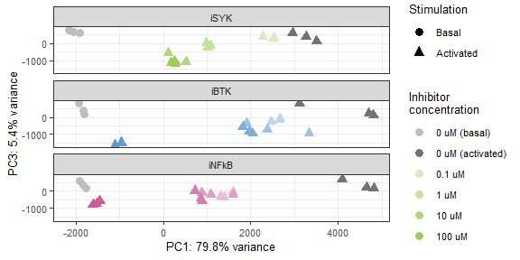

FASEB conference poster figures
mwitmond
2024-06-04
Last updated: 2025-02-14
Checks: 7 0
Knit directory: chapters_DLBCL/
This reproducible R Markdown analysis was created with workflowr (version 1.7.1). The Checks tab describes the reproducibility checks that were applied when the results were created. The Past versions tab lists the development history.
Great! Since the R Markdown file has been committed to the Git repository, you know the exact version of the code that produced these results.
Great job! The global environment was empty. Objects defined in the global environment can affect the analysis in your R Markdown file in unknown ways. For reproduciblity it’s best to always run the code in an empty environment.
The command set.seed(20241022) was run prior to running
the code in the R Markdown file. Setting a seed ensures that any results
that rely on randomness, e.g. subsampling or permutations, are
reproducible.
Great job! Recording the operating system, R version, and package versions is critical for reproducibility.
Nice! There were no cached chunks for this analysis, so you can be confident that you successfully produced the results during this run.
Great job! Using relative paths to the files within your workflowr project makes it easier to run your code on other machines.
Great! You are using Git for version control. Tracking code development and connecting the code version to the results is critical for reproducibility.
The results in this page were generated with repository version 94c226d. See the Past versions tab to see a history of the changes made to the R Markdown and HTML files.
Note that you need to be careful to ensure that all relevant files for
the analysis have been committed to Git prior to generating the results
(you can use wflow_publish or
wflow_git_commit). workflowr only checks the R Markdown
file, but you know if there are other scripts or data files that it
depends on. Below is the status of the Git repository when the results
were generated:
Ignored files:
Ignored: .Rhistory
Ignored: .Rproj.user/
Ignored: analysis/figure/
Untracked files:
Untracked: code/packages_FACS.R
Untracked: code/packages_seq.R
Untracked: data/AL006_InhibCombiTest/
Untracked: data/DS102_StimTest/
Untracked: data/DS103_ViabilityTest/
Untracked: data/DS104_StimInhibTest/
Untracked: data/DS108_StimInhibIDseq/
Untracked: data/DS113_InhibCombiIDseq/
Untracked: output/DS102_StimTest/
Untracked: output/DS103_ViabilityTest/
Untracked: output/DS104_StimInhibTest/
Untracked: output/DS108_StimInhibIDseq/
Untracked: output/DS113_InhibCombiIDseq/
Untracked: output/figures/
Untracked: output/network_visual_DLBCL/
Untracked: output/network_visual_paper/
Unstaged changes:
Deleted: analysis/about.Rmd
Note that any generated files, e.g. HTML, png, CSS, etc., are not included in this status report because it is ok for generated content to have uncommitted changes.
These are the previous versions of the repository in which changes were
made to the R Markdown (analysis/x_poster_FASEB.Rmd) and
HTML (docs/x_poster_FASEB.html) files. If you’ve configured
a remote Git repository (see ?wflow_git_remote), click on
the hyperlinks in the table below to view the files as they were in that
past version.
| File | Version | Author | Date | Message |
|---|---|---|---|---|
| html | ffc633f | mwitmond | 2025-02-12 | Build site. |
| html | 4492de7 | mwitmond | 2024-10-22 | Build site. |
| Rmd | 6559698 | mwitmond | 2024-10-22 | Paper figs + analysis files for ch figs |
Set-up
row_order = c("A", "B", "C", "D", "E", "F", "G", "H")
col_order = c("1", "2", "3", "4", "5", "6", "7", "8", "9", "10", "11", "12")
panel_labels <- c("a", "b", "c","d", "e", "f", "g", "h", "i", "j", "k", "l", "m")
PANEL_labels <- c("A", "B", "C","D", "E", "F", "G", "H", "I", "J", "K", "L", "M")
# textsize <- theme(axis.text.x = element_text(colour = "grey", size = 11), #, face = "bold"
# axis.text.y = element_text(colour = "grey", size = 11),
# axis.title = element_text(colour = "black", size = 12),
# legend.title = element_text(colour = "black", size = 12),
# # legend.title = element_blank(),
# legend.text = element_text(colour = "grey", size = 11),
# strip.text.x = element_text(colour = "black", size = 12)
# )
textsize <- theme(text = element_text(size = 10, family = "sans", colour = "black"),
plot.title = element_text(size = 11)
)
textsize_small <- theme(text = element_text(size = 7, family = "sans", colour = "black"),
plot.title = element_text(size = 8)
)
# textsize_small <- theme(axis.text.x = element_text(colour = "black", size = 9),
# axis.text.y = element_text(colour = "black", size = 9),
# axis.title = element_text(colour = "black", size = 10),
# legend.text = element_text(colour = "black", size = 9),
# title = element_text(color = "black", size = 10),
# strip.text.x = element_text(colour = "black", size = 10, face = "bold"),
# strip.text.y = element_text(colour = "black", size = 10, face = "bold")
# )colors_nord <- c("#2e3440", "#3b4252", "#434c5e", "#4c566a",
"#d8dee9", "#e5e9f0", "#eceff4",
"#8fbcbb", "#88c0d0", "#81a1c1", "#5e81ac",
"#bf616a", "#d08770", "#ebcb8b", "#a3be8c", "#b48ead")
colors_toll_bright <- c("#4477AA", "#66CCEE", "#228833", "#CCBB44", "#EE6677", "#AA3377", "#BBBBBB")
colors_toll_mute <- c("#332288", "#88CCEE", "#44AA99", "#117733", "#999933", "#DDCC77", "#CC6677", "#882255", "#AA4499", "#DDDDDD")
colors_toll_br <- c("#364B9A", "#4A7BB7", "#6EA6CD", "#98CAE1", "#C2E4EF", "#EAECCC", "#FEDA8B", "#FDB366", "#F67A4B", "#DD3D2D", "#A50026")
colors_blue9 <- c("#f7fbff", "#deebf7", "#c6dbef", "#9ecae1", "#6baed6", "#4292c6", "#2171b5", "#08519c", "#08306b")
colors_green9 <- c("#f7fcf5", "#e5f5e0", "#c7e9c0", "#a1d99b", "#74c476", "#41ab5d", "#238b45", "#006d2c", "#00441b")
colors_purple9 <- c("#fcfbfd", "#efedf5", "#dadaeb", "#bcbddc", "#9e9ac8", "#807dba", "#6a51a3", "#54278f", "#3f007d")
colors_red9 <- c("#fff5f0", "#fee0d2", "#fcbba1", "#fc9272", "#fb6a4a", "#ef3b2c", "#cb181d", "#a50f15", "#67000d")
colors_orange9 <- c("#fff5eb", "#fee6ce", "#fdd0a2", "#fdae6b", "#fd8d3c", "#f16913", "#d94801", "#a63603", "#7f2704")
colors_grey9 <- c("#ffffff", "#f0f0f0", "#d9d9d9", "#bdbdbd", "#969696", "#737373", "#525252", "#252525", "#000000")
colors_yb9 <- c("#ffffd9", "#edf8b1", "#c7e9b4", "#7fcdbb", "#41b6c4", "#1d91c0", "#225ea8", "#253494", "#081d58")
colors_pr9 <- c("#f7f4f9", "#e7e1ef", "#d4b9da", "#c994c7", "#df65b0", "#e7298a", "#ce1256", "#980043", "#67001f")
# Variable-specific colors
colors_cell <- c("HBL1" = "#AA4499", "OCI-Ly8" = "#332288")
colors_stim <- c("PBS" = "#525252", "aIg+H2O2" = "#FDB366")
colors_cell_stim <- c("HBL1 - PBS" = "#CC6677", "HBL1 - aIg+H2O2" = "#AA4499", "OCI-Ly8 - PBS" = "#88CCEE", "OCI-Ly8 - aIg+H2O2" = "#332288")
# colors_inhib <- c("iSYK" = "#228833", "iBTK" = "#4477AA", "iNFkB" = "#AA3377")
colors_inhib <- c("iSYK" = "#9dce5c", "iBTK" = "#5c9dce", "iNFkB" = "#ce5c9d")
colors_conc <- colors_purple9[c(3, 5, 6, 8, 9)]
colors_iSYK <- colors_green9[c(3, 5, 6, 8, 9)]
colors_iBTK <- colors_blue9[c(3, 5, 6, 8, 9)]
colors_iNFkB <- colors_pr9[c(3, 5, 6, 8, 9)]
colors_conc_stim <- colors_orange9[c(2, 3, 5, 6, 8, 9)]
colors_conc_PBS <- colors_grey9[c(2, 3, 5, 6, 8, 9)]Data
# ID-seq data DS108 (counts per well/sample and mean per condition)
data_sample <- read_csv("output/DS108_StimInhibIDseq/IDseq_ann/IDseq_data_sample.csv") %>%
subset(inhibitor != "iPI3Kd" & target_nospace != "BIM" & target_nospace != "Histone_H2AX_S139" & cell_line == "HBL1") %>%
mutate(cell_stim = paste(cell_line, stimulus),
inhib_new = case_when(inhib_conc == "0 uM (DMSO)" ~ "DMSO ctrl",
.default = inhibitor),
inhib_text_new = case_when(inhib_conc == "0 uM (DMSO)" ~ "DMSO ctrl",
.default = inhib_conc_text))
data_condition <- read_csv("output/DS108_StimInhibIDseq/IDseq_ann/IDseq_data_condition.csv") %>%
subset(inhibitor != "iPI3Kd" & target_nospace != "BIM" & cell_line == "HBL1") %>%
mutate(cell_stim = paste(cell_line, stimulus),
inhib_new = case_when(inhib_conc == "0 uM (DMSO)" ~ "DMSO ctrl",
.default = inhibitor),
inhib_text_new = case_when(inhib_conc == "0 uM (DMSO)" ~ "DMSO ctrl",
.default = inhib_conc_text))
meta_cols <- c("plate_well", "plate", "well", "experiment", "cell_line", "stimulus", "inhibitor", "inhib_conc_uM", "inhib_conc", "inhib_conc_text", "inhib_text_new", "replicate", "description", "descript_rep")order_stim <- c("PBS", "aIg+H2O2")
label_stim <- c("Control", "Stimulated")
order_inhib <- c("iSYK", "iBTK", "iNFkB")
order_conc <- c("0 uM (DMSO)", "0.1 uM", "1 uM", "10 uM", "100 uM")
label_conc <- c("0 uM", "0.1 uM", "1 uM", "10 uM", "100 uM")
order_conc_select <- c("0 uM (DMSO)", "1 uM", "100 uM")Network-wide disruptions
DESeq2 analysis
DESeq2: Effect of 1 uM or 100 uM inhib on stim vs PBS - interaction, HBL1
Analysis parameters:
All HBL1 samples: 4 inhibitors, 5 conc, 2 stimuli
Compensated counts (>= 1)
Model design: inhib_text_new (ref: DMSO ctrl) + stimulus (ref: PBS) + inhib_text_new:stimulus
# Differential expression analysis
# Prepare data to load into DESeq dataset
# cts: dataframe with proteins as row names, wells as column names, and count data as cell values
# coldata: dataframe with wells as row names and all metadata as columns
cts <- data_sample %>%
dplyr::filter(inhib_conc %in% order_conc_select & counts >= 1) %>%
dplyr::select(target_nospace, plate_well, counts) %>%
dplyr::filter(!is.na(counts)) %>%
spread(plate_well, counts) %>%
replace(is.na(.), 0) %>%
column_to_rownames("target_nospace")
cts <- as.matrix(as.data.frame(cts))
coldata <- data.frame(plate_well = colnames(cts)) %>%
left_join(data_sample[c(1:13, 28:30)]) %>%
distinct() %>%
mutate(stimulus = factor(stimulus, levels = order_stim),
inhib_conc = factor(inhib_conc, levels = order_conc)) #If necessary, make factors of some metadata columns
rownames(coldata) <- coldata$plate_well
# Create DESeq object
# First define how the model is designed. Place most important parameter last
modeldesign <- ~ inhib_text_new + stimulus + inhib_text_new:stimulus
# Then create the DESeq dataset
dds <- DESeqDataSetFromMatrix(countData = cts,
colData = coldata,
design = modeldesign)
# Define the reference samples for design parameter
dds$inhib_text_new <- relevel(dds$inhib_text_new, ref = "DMSO ctrl")
dds$stimulus <- relevel(dds$stimulus, ref = "PBS")
# Run DESeq2:
# This function performs a default analysis through the steps:
# Estimation of size factors: estimateSizeFactors
# Estimation of dispersion: estimateDispersions
# Negative Binomial GLM fitting and Wald statistics: nbinomWaldTest
dds <- DESeq(dds, test = "Wald", fitType = "local")
DESeq_comparisons <- resultsNames(dds) # lists the coefficients
# DESeq_comparisons
# Results
results_iSYK1_stim <- results(dds, name = "inhib_text_new1.uM.iSYK.stimulusaIg.H2O2", alpha = 0.05)
results_iBTK1_stim <- results(dds, name = "inhib_text_new1.uM.iBTK.stimulusaIg.H2O2", alpha = 0.05)
results_iNFkB1_stim <- results(dds, name = "inhib_text_new1.uM.iNFkB.stimulusaIg.H2O2", alpha = 0.05)
results_iSYK100_stim <- results(dds, name = "inhib_text_new100.uM.iSYK.stimulusaIg.H2O2", alpha = 0.05)
results_iBTK100_stim <- results(dds, name = "inhib_text_new100.uM.iBTK.stimulusaIg.H2O2", alpha = 0.05)
results_iNFkB100_stim <- results(dds, name = "inhib_text_new100.uM.iNFkB.stimulusaIg.H2O2", alpha = 0.05)
list_results <- list(results_iSYK1_stim, results_iBTK1_stim, results_iNFkB1_stim,
results_iSYK100_stim, results_iBTK100_stim, results_iNFkB100_stim)
# summary(results_HBL1, padj = 0.05)
# Data transformation
# Regularized log transform
rld <- rlog(dds, blind = FALSE)
# Volcano preparation/data wrangling
# Function to prepare DESeq2 results for volcano plots
# Standard log2FC filter = log2(1.5); standard padj filter = 0.05
prep_forvulcano <- function(dataset = dataset, padj_filter = 0.05, foldchange_filter = log2(1.5), filter = TRUE){
dataset$proteins <- rownames(dataset)
dataset$target_nospace <- rownames(dataset)
# Add a column for differential expression
dataset$diff_express <- "NO"
dataset$diff_express[dataset$log2FoldChange > foldchange_filter & dataset$padj < padj_filter] <- "UP"
dataset$diff_express[dataset$log2FoldChange < -foldchange_filter & dataset$padj < padj_filter] <- "DOWN"
# Add a column for labeling
dataset$delabel <- NA
dataset$delabel[dataset$diff_express != "NO"] <- dataset$proteins[dataset$diff_express != "NO"]
# Add Ab metadata
# dataset <- left_join(as.data.frame(dataset), meta_Abs)
return(as.data.frame(dataset))
}
# Apply function to each dataset
# Applied thresholds:
# padj < 0.05
# log2FC > log2(1.1)
names_results_volc <- c("volc_iSYK1_stim", "volc_iBTK1_stim", "volc_iNFkB1_stim",
"volc_iSYK100_stim", "volc_iBTK100_stim", "volc_iNFkB100_stim")
for(dataset in c(1:length(list_results))){
assign(names_results_volc[dataset], prep_forvulcano(dataset = list_results[[dataset]], foldchange_filter = log2(1.1)))
}
# Function to filter the data
# Applied thresholds:
# padj < 0.05
# log2FC > log2(1.1)
filter_heatmap <- function(dataset = dataset, padj_filter = 0.05, foldchange_filter = log2(1.5), select_top = TRUE, select_n = 10) {
data <- as.data.frame(dataset) %>%
dplyr::filter(padj <= padj_filter & abs(log2FoldChange) >= foldchange_filter) %>%
arrange(-log2FoldChange)
rownames(data) <- data$target_nospace
# Select top 10 proteins with most increased and decreased expression
if (select_top == TRUE) {
data_top <- data %>%
slice_max(order_by = abs(log2FoldChange), n = select_n)
return(data_top)
} else {
return(data)
}
}
# Apply function to each dataset
list_results_volc <- list(volc_iSYK1_stim, volc_iBTK1_stim, volc_iNFkB1_stim,
volc_iSYK100_stim, volc_iBTK100_stim, volc_iNFkB100_stim)
names_results_heat <- c("heat_iSYK1_stim", "heat_iBTK1_stim", "heat_iNFkB1_stim",
"heat_iSYK100_stim", "heat_iBTK100_stim", "heat_iNFkB100_stim")
for(dataset in c(1:length(list_results_volc))){
assign(names_results_heat[[dataset]], filter_heatmap(dataset = list_results_volc[[dataset]], select_top = FALSE, foldchange_filter = log2(1.1)))
dataset
}Heatmap
# Data
# Combine heatmap datasets (without DESeq2 analysis values)
heat_1_100 <- list(heat_iSYK1_stim, heat_iBTK1_stim, heat_iNFkB1_stim,
heat_iSYK100_stim, heat_iBTK100_stim, heat_iNFkB100_stim) %>%
purrr::reduce(full_join) %>%
dplyr::select(-c(baseMean, log2FoldChange, lfcSE, stat, pvalue, padj, diff_express, proteins, delabel)) %>%
left_join(data_sample[, 14:21]) %>%
distinct()
# Subset the full dataframe to get metadata for heatmap plotting
heat_info <- data_sample %>%
dplyr::select(plate_well, inhib_conc, stimulus, inhibitor) %>%
distinct() %>%
dplyr::filter(inhib_conc %in% order_conc_select & !(stimulus == "PBS" & inhib_conc %in% order_conc_select[2:3])) %>%
mutate(inhibitor = factor(inhibitor, levels = order_inhib)) %>%
as.data.frame()
rownames(heat_info) <- heat_info$plate_well
heat_info <- dplyr::select(heat_info, -c(plate_well))
# Get the rld transformed data for the heatmap and scale per row
heat_data <- t(scale(t(assay(rld)[c(heat_1_100$target_nospace), rownames(heat_info)])))
# sort_hclust <- function(...) as.hclust(dendsort(as.dendrogram(...)))
# data_cluster_rows <- sort_hclust(hclust(dist(data_cell)))
# plot(data_cluster_rows, main = "Unsorted Dendrogram", xlab = "", sub = "")
# Figure
fig_heat_ann_colors <- list(stimulus = colors_stim,
inhibitor = colors_inhib,
# inhib_new = c("DMSO ctrl" = "grey", colors_inhib),
inhib_conc = setNames(colors_conc[c(1:3)], unique(heat_info$inhib_conc)))
fig_heat_auto <- ggplotify::as.ggplot(ComplexHeatmap::pheatmap(
heat_data,
scale = "none",
cluster_rows = TRUE,
treeheight_row = 0,
show_rownames = TRUE,
show_colnames = FALSE,
cluster_cols = FALSE,
annotation_col = heat_info,
annotation_colors = fig_heat_ann_colors,
colorRampPalette(c("navy", "white", "firebrick3"))(50),
column_split = heat_info$inhibitor,
row_split = subset(heat_1_100)$modification,
# cellwidth = 10,
# cellheight = 10,
fontsize = 5,
border_color = NA,
# legend = FALSE,
# annotation_legend = FALSE,
# main = "aIg+H2O2 vs PBS (without inhibitors)"
)) +
ggtitle("auto")
# fig_heat_auto
#################
fig_heat_colors <- list(Stimulation = colors_stim,
Inhibitor = colors_inhib,
"Inhibitor conc" = setNames(colors_conc[c(1, 3, 5)], unique(heat_info$inhib_conc)),
labels_gp = gpar(fontsize = 5),
simple_anno_size = unit(8, "mm"))
fig_heat_legend <- list(title = "Scaled\nexpression", title_gp = gpar(fontsize = 6), labels_gp = gpar(fontsize = 6),
grid_width = unit(2, "mm"), grid_height = unit(20, "mm"))
fig_heat_col_ann <- HeatmapAnnotation(Inhibitor = heat_info$inhibitor,
Stimulation = factor(heat_info$stimulus, levels = order_stim),
"Inhibitor conc" = heat_info$inhib_conc,
simple_anno_size = unit(1.5, "mm"),
annotation_name_gp = gpar(fontsize = 6),
col = fig_heat_colors,
annotation_legend_param = list(Inhibitor = list(title = "Inhibitor",
title_gp = gpar(fontsize = 6),
labels_gp = gpar(fontsize = 6),
grid_width = unit(2, "mm"),
grid_height = unit(1, "mm")),
Stimulation = list(title = "Stimulation",
labels = c("Basal", "Activated"),
title_gp = gpar(fontsize = 6),
labels_gp = gpar(fontsize = 6),
grid_width = unit(2, "mm"),
grid_height = unit(1, "mm")),
"Inhibitor conc" = list(title = "Inhibitor\nconcentration",
title_gp = gpar(fontsize = 6),
labels_gp = gpar(fontsize = 6),
grid_width = unit(2, "mm"),
grid_height = unit(1, "mm"))),
show_legend = c(FALSE, TRUE, TRUE))
fig_heat_man <- ggplotify::as.ggplot(ComplexHeatmap::pheatmap(
heat_data,
scale = "none",
cluster_rows = TRUE,
treeheight_row = 0,
show_rownames = TRUE,
show_colnames = FALSE,
cluster_cols = FALSE,
# annotation_col = heat_info,
# annotation_colors = fig_heat_colors,
top_annotation = fig_heat_col_ann,
colorRampPalette(c("navy", "white", "firebrick3"))(50),
column_split = heat_info$inhibitor,
row_split = subset(heat_1_100)$modification,
row_gap = unit(1, "mm"),
cellwidth = 10,
cellheight = 10,
fontsize = 5,
row_title_gp = gpar(fontsize = 6),
column_title_gp = gpar(fontsize = 6),
annotation_names_col = gpar(fontsize = 6),
border_color = NA,
heatmap_legend_param = fig_heat_legend
# annotation_legend = FALSE,
)) +
theme(legend.position = "bottom") +
textsize_small
fig_heat_man
| Version | Author | Date |
|---|---|---|
| 4492de7 | mwitmond | 2024-10-22 |
# Save figure as jpg and png
ggsave(
fig_heat_man,
filename = "output/figures/poster/fig_heat_1_100.jpg",
width = 7.5,
height = 4,
units = "in",
dpi = 300
)
# ggsave(
# fig,
# filename = "output/figures/fig.png",
# width = 6,
# height = 3,
# units = "in",
# dpi = 300
# )Venn diagram
Venn diagrams of proteins where the aIg+H2O2 vs PBS comparison is significantly affected by 1 uM or 100 uM inhibitor
# Data
# Protein lists
prot_iSYK1 <- sort(unique(c(heat_iSYK1_stim$target_nospace)))
prot_iBTK1 <- sort(unique(c(heat_iBTK1_stim$target_nospace)))
prot_iNFkB1 <- sort(unique(c(heat_iNFkB1_stim$target_nospace)))
prot_iSYK100 <- sort(unique(c(heat_iSYK100_stim$target_nospace)))
prot_iBTK100 <- sort(unique(c(heat_iBTK100_stim$target_nospace)))
prot_iNFkB100 <- sort(unique(c(heat_iNFkB100_stim$target_nospace)))
# Figure
# 1 uM inhibitor
prot_data_1uM <- list(prot_iSYK1, prot_iBTK1, prot_iNFkB1)
prot_names_1uM <- c(paste0("iSYK (", length(prot_iSYK1), " total)"),
paste0("iBTK (", length(prot_iBTK1), " total)"),
paste0("iNFkB (", length(prot_iNFkB1), " total)"))
names(prot_data_1uM) <- prot_names_1uM
fig_venn_1uM <- ggvenn(data = prot_data_1uM,
fill_color = c("#228833", "#4477AA", "#AA3377"),
# auto_scale = TRUE,
# show_percentage = FALSE,
# show_elements = TRUE,
stroke_size = 0.5,
text_size = 2.5,
set_name_size = 3.5) +
ggtitle("Proteins significantly affected by 1uM inhibitor") +
textsize_small
# fig_venn_1uM
# 100 uM inhibitor
prot_data_100uM <- list(prot_iSYK100, prot_iBTK100, prot_iNFkB100)
prot_names_100uM <- c(paste0("iSYK (", length(prot_iSYK100), " total)"),
paste0("iBTK (", length(prot_iBTK100), " total)"),
paste0("iNFkB (", length(prot_iNFkB100), " total)"))
names(prot_data_100uM) <- prot_names_100uM
fig_venn_100uM <- ggvenn(data = prot_data_100uM,
fill_color = c("#228833", "#4477AA", "#AA3377"),
# auto_scale = TRUE,
# show_percentage = FALSE,
# show_elements = TRUE,
stroke_size = 0.5,
text_size = 2.5,
set_name_size = 3.5) +
ggtitle("Proteins significantly affected by 100 uM inhibitor") +
textsize_small
# fig_venn_100uM
fig_venn1_100 <- plot_grid(fig_venn_1uM, fig_venn_100uM, nrow = 1)
fig_venn1_100
| Version | Author | Date |
|---|---|---|
| 4492de7 | mwitmond | 2024-10-22 |
# Data
# Protein lists
prot_iSYK <- read_lines("output/DS108_StimInhibIDseq/IDseq_sign_threshold/active_inhibitor/HBL1_iSYK_stim_sign_proteins.txt")
prot_iBTK <- read_lines("output/DS108_StimInhibIDseq/IDseq_sign_threshold/active_inhibitor/HBL1_iBTK_stim_sign_proteins.txt")
prot_iNFkB <- read_lines("output/DS108_StimInhibIDseq/IDseq_sign_threshold/active_inhibitor/HBL1_iNFkB_stim_sign_proteins.txt")
# Figure
# HBL1
prot_data <- list(prot_iSYK, prot_iBTK, prot_iNFkB)
prot_names <- c(paste0("iSYK (", length(prot_iSYK), " total)"),
paste0("iBTK (", length(prot_iBTK), " total)"),
paste0("iNFkB (", length(prot_iNFkB), " total)"))
names(prot_data) <- prot_names
fig_venn_total <- ggvenn(data = prot_data,
fill_color = c("#9dce5c", "#5c9dce", "#ce5c9d"),
# auto_scale = TRUE,
# show_percentage = FALSE,
# show_elements = TRUE,
stroke_size = 0.75,
text_size = 3,
set_name_size = 4) +
# ggtitle("Proteins significantly affected by inhibitors") +
textsize_small
fig_venn_total
| Version | Author | Date |
|---|---|---|
| 4492de7 | mwitmond | 2024-10-22 |
# Save figure as jpg and png
ggsave(
fig_venn1_100,
filename = "output/figures/poster/fig_venn_1_100.jpg",
width = 10,
height = 5,
units = "in",
dpi = 300
)
ggsave(
fig_venn_total,
filename = "output/figures/poster/fig_venn_total.jpg",
width = 5,
height = 5,
units = "in",
dpi = 300
)
# ggsave(
# fig,
# filename = "output/figures/fig.png",
# width = 6,
# height = 3,
# units = "in",
# dpi = 300
# )Network projections
# Active
fig_network_active <- magick::image_read("output/figures/non_R_figs/HBL1_StimvsPBS_PBSctrl.png") %>%
magick::image_border(color = "black", geometry = "1x1") %>%
magick::image_ggplot() +
ggtitle("\nActivated vs basal") +
textsize
# fig_network_active
# iSYK
fig_network_iSYK <- magick::image_read("output/figures/non_R_figs/HBL1_StimOnly_iSYK100uMvsDMSO.png") %>%
magick::image_border(color = "black", geometry = "1x1") %>%
magick::image_ggplot() +
ggtitle("100 uM iSYK vs DMSO ctrl\nin activated cells") +
textsize
# fig_network_iSYK
# iBTK
fig_network_iBTK <- magick::image_read("output/figures/non_R_figs/HBL1_StimOnly_iBTK100uMvsDMSO.png") %>%
magick::image_border(color = "black", geometry = "1x1") %>%
magick::image_ggplot() +
ggtitle("100 uM iBTK vs DMSO ctrl\nin activated cells") +
textsize
# fig_network_iBTK
# iNFkB
fig_network_iNFkB <- magick::image_read("output/figures/non_R_figs/HBL1_StimOnly_iNFkB100uMvsDMSO.png") %>%
magick::image_border(color = "black", geometry = "1x1") %>%
magick::image_ggplot() +
ggtitle("100 uM iNFkB vs DMSO ctrl\nin activated cells") +
textsize
# fig_network_iNFkB
# legend
fig_network_legend <- magick::image_read("output/figures/non_R_figs/legend_network_projections_vert.png") %>%
# magick::image_border(color = "black", geometry = "1x1") %>%
magick::image_ggplot() +
ggtitle("\n") +
textsize
# fig_network_legend
# Combined
# fig_network_data <- plot_grid(fig_network_active, fig_network_iSYK, fig_network_iBTK, fig_network_iNFkB, nrow = 1, rel_widths = c(1, 1, 1, 1), align = "h", label_size = 10)
# fig_network <- plot_grid(fig_network_data, fig_network_legend, ncol = 1, rel_heights = c(5, 1))
# fig_network
# fig_network <- plot_grid(fig_network_active, fig_network_iSYK, fig_network_iBTK, fig_network_iNFkB, fig_network_legend, nrow = 1, rel_widths = c(2, 2, 2, 2, 1))
# fig_network
fig_network_data <- plot_grid(fig_network_active, fig_network_iSYK, fig_network_iBTK, fig_network_iNFkB, ncol = 2, rel_widths = c(1, 1), rel_heights = c(1, 1), align = "h", scale = 0.95)
# fig_network_data
fig_network <- plot_grid(fig_network_data, fig_network_legend, nrow = 1, rel_widths = c(5, 0.75))
fig_network
| Version | Author | Date |
|---|---|---|
| 4492de7 | mwitmond | 2024-10-22 |
# Save figure as jpg and png
ggsave(
fig_network,
filename = "output/figures/poster/fig_network.jpg",
width = 8,
height = 7.5,
units = "in",
dpi = 300
)
# ggsave(
# fig,
# filename = "output/figures/fig.png",
# width = 6,
# height = 3,
# units = "in",
# dpi = 300
# )Repressed signaling state
PCA
# Prepare data for FactoMineR package
# cts_pca: dataframe with wells as row names, proteins as column names, and count data as cell values
# coldata: dataframe with wells as row names and all metadata as columns
cts_pca <- data_sample %>%
dplyr::filter(counts_norm >= 1) %>%
dplyr::select(target_nospace, plate_well, counts_norm) %>%
dplyr::filter(!is.na(counts_norm)) %>%
spread(target_nospace, counts_norm) %>%
replace(is.na(.), 0) %>%
column_to_rownames("plate_well")
coldata <- data.frame(plate_well = rownames(cts_pca)) %>%
left_join(distinct(dplyr::select(data_sample, all_of(meta_cols)))) %>%
mutate(stimulus = factor(stimulus, levels = order_stim),
inhibitor = factor(inhibitor, levels = order_inhib),
inhib_conc = factor(inhib_conc, levels = order_conc)) #If necessary, make factors of some metadata columns
rownames(coldata) <- coldata$plate_well
# Results
pca_results <- PCA(cts_pca, scale.unit = FALSE, ncp = 5, graph = FALSE)
pca_expl_var <- as.data.frame(get_eigenvalue(pca_results)) %>% # Percentage variance explained by each PC
rownames_to_column("PC") %>%
pull(var = variance.percent, name = PC) %>%
round(digits = 1)
pca_variab <- get_pca_var(pca_results) # Results focused on variables (proteins)
pca_indiv <- get_pca_ind(pca_results) # Results focused on individuals (wells)
pca_data <- as.data.frame(pca_indiv$coord[, 1:3]) %>%
rownames_to_column("plate_well") %>%
dplyr::rename(PC1 = Dim.1, PC2 = Dim.2, PC3 = Dim.3) %>%
left_join(coldata)Basic: only basal + activated + 100 uM inhibited
# Figure
# Selected samples only
conditions <- c("0 uM (DMSO)", "100 uM")
# select_colors <- c("DMSO ctrl" = "grey", "100 uM iSYK" = "green", "100 uM iBTK" = "blue", "100 uM iNFkB" = "red")
# select_colors <- c("DMSO ctrl" = "grey", "100 uM iSYK" = "#228833", "100 uM iBTK" = "#4477AA", "100 uM iNFkB" = "#AA3377")
select_colors <- c("DMSO ctrl" = "grey", "100 uM iSYK" = "#9dce5c", "100 uM iBTK" = "#5c9dce", "100 uM iNFkB" = "#ce5c9d")
fig_pca_basic <- ggplot(subset(pca_data, inhib_conc %in% conditions)) +
geom_point(aes(x = PC1, y = PC3, shape = stimulus, color = inhib_text_new), size = 3) +
# scale_color_manual(values = c(colors_orange9[3:7], colors_grey9[3:7]), name = "Stim - Inhib conc") +
scale_color_manual(values = select_colors, breaks = names(select_colors), name = "Inhibitor") +
scale_shape_manual(values = c(16, 17), labels = c("Basal", "Activated"), name = "Stimulation") +
xlab(paste0("PC1: ", pca_expl_var[1], "% variance")) +
ylab(paste0("PC3: ", pca_expl_var[3], "% variance")) +
# ggtitle("PC1 vs PC3") +
theme_bw() +
# theme(legend.position = "none") +
textsize
fig_pca_basic
| Version | Author | Date |
|---|---|---|
| 4492de7 | mwitmond | 2024-10-22 |
# PC1-3
fig_PC12 <- ggplot(subset(pca_data, inhib_conc %in% conditions)) +
geom_point(aes(x = PC1, y = PC2, shape = stimulus, color = inhib_text_new), size = 3) +
scale_color_manual(values = select_colors, breaks = names(select_colors), name = "Inhibitor") +
scale_shape_manual(values = c(16, 17), labels = c("Basal", "Activated"), name = "Stimulation") +
xlab(paste0("PC1: ", pca_expl_var[1], "% variance")) +
ylab(paste0("PC2: ", pca_expl_var[2], "% variance")) +
ggtitle("PC1 vs PC2") +
theme_bw() +
theme(legend.position = "none") +
textsize
# fig_PC12
fig_PC13 <- ggplot(subset(pca_data, inhib_conc %in% conditions)) +
geom_point(aes(x = PC1, y = PC3, shape = stimulus, color = inhib_text_new), size = 3) +
scale_color_manual(values = select_colors, breaks = names(select_colors), name = "Inhibitor") +
scale_shape_manual(values = c(16, 17), labels = c("Basal", "Activated"), name = "Stimulation") +
xlab(paste0("PC1: ", pca_expl_var[1], "% variance")) +
ylab(paste0("PC3: ", pca_expl_var[3], "% variance")) +
ggtitle("PC1 vs PC3") +
theme_bw() +
theme(legend.position = "none") +
textsize
# fig_PC13
fig_PC23 <- ggplot(subset(pca_data, inhib_conc %in% conditions)) +
geom_point(aes(x = PC2, y = PC3, shape = stimulus, color = inhib_text_new), size = 3) +
scale_color_manual(values = select_colors, breaks = names(select_colors), name = "Inhibitor") +
scale_shape_manual(values = c(16, 17), labels = c("Basal", "Activated"), name = "Stimulation") +
xlab(paste0("PC2: ", pca_expl_var[2], "% variance")) +
ylab(paste0("PC3: ", pca_expl_var[3], "% variance")) +
ggtitle("PC2 vs PC3") +
theme_bw() +
# theme(legend.position = "none") +
textsize
# fig_PC23
fig_pca_PC13 <- plot_grid(fig_PC12, fig_PC13, fig_PC23, ncol = 3, align = "h", rel_widths = c(1, 1, 1.4))
print(fig_pca_PC13)
| Version | Author | Date |
|---|---|---|
| 4492de7 | mwitmond | 2024-10-22 |
# Save figure as jpg and png
ggsave(
fig_pca_basic,
filename = "output/figures/poster/fig_pca_basic.jpg",
width = 4.5,
height = 3,
units = "in",
dpi = 300
)
ggsave(
fig_pca_PC13,
filename = "output/figures/poster/fig_pca_PC13.jpg",
width = 10,
height = 3,
units = "in",
dpi = 300
)
# ggsave(
# fig,
# filename = "output/figures/fig.png",
# width = 6,
# height = 3,
# units = "in",
# dpi = 300
# )Detailed: all concentrations
# Figure
select_colors <- c("DMSO ctrl" = "grey", "100 uM iSYK" = "#9dce5c", "100 uM iBTK" = "#5c9dce", "100 uM iNFkB" = "#ce5c9d")
fig_pca_detail1 <- ggplot(drop_na(dplyr::filter(pca_data, !(stimulus == "PBS" & inhib_conc %in% order_conc[2:5])))) +
geom_point(aes(x = PC1, y = PC3, shape = paste(stimulus, "-", inhib_conc), color = paste(stimulus, "-", inhib_conc)), size = 3) +
scale_color_manual(values = c("grey", colors_orange9[3:7]),
breaks = c("PBS - 0 uM (DMSO)", "aIg+H2O2 - 0 uM (DMSO)", "aIg+H2O2 - 0.1 uM", "aIg+H2O2 - 1 uM", "aIg+H2O2 - 10 uM", "aIg+H2O2 - 100 uM"),
# labels = c(),
name = "Treatment") +
# scale_color_manual(values = c(colors_orange9[3:7], colors_grey9[3:7]), name = "Stim - Inhib conc") +
# scale_color_manual(values = select_colors, breaks = names(select_colors), name = "Inhibitor") +
scale_shape_manual(values = c(16, 17, 17, 17, 17, 17),
breaks = c("PBS - 0 uM (DMSO)", "aIg+H2O2 - 0 uM (DMSO)", "aIg+H2O2 - 0.1 uM", "aIg+H2O2 - 1 uM", "aIg+H2O2 - 10 uM", "aIg+H2O2 - 100 uM"),
name = "Treatment") +
facet_wrap(~inhibitor, ncol = 1) +
xlab(paste0("PC1: ", pca_expl_var[1], "% variance")) +
ylab(paste0("PC3: ", pca_expl_var[3], "% variance")) +
theme_bw() +
# theme(legend.position = "none") +
textsize
fig_pca_detail1
| Version | Author | Date |
|---|---|---|
| 4492de7 | mwitmond | 2024-10-22 |
pca_data_select <- pca_data %>%
dplyr::filter(!(stimulus == "PBS" & inhib_conc %in% order_conc[2:5])) %>%
drop_na() %>%
dplyr::arrange(factor(stimulus, levels = order_stim), factor(inhibitor, levels = order_inhib))
pca_legend_shapes <- c(16, 16, 16,
17, 17, 17, 17, 17,
17, 17, 17, 17, 17,
17, 17, 17, 17, 17)
pca_legend_values <- c("grey", "grey", "grey",
"#737373", "#d7ebbd", "#c4e19d", "#b0d77c", "#9dce5c",
"#737373", "#bdd7eb", "#9dc4e1", "#7cb0d7", "#5c9dce",
"#737373", "#ebbdd7", "#e19dc4", "#d77cb0", "#ce5c9d")
pca_legend_levels <- c("0 uM iSYK (DMSO) PBS", "0 uM iBTK (DMSO) PBS", "0 uM iNFkB (DMSO) PBS",
"0 uM iSYK (DMSO) aIg+H2O2", "0.1 uM iSYK aIg+H2O2", "1 uM iSYK aIg+H2O2", "10 uM iSYK aIg+H2O2", "100 uM iSYK aIg+H2O2",
"0 uM iBTK (DMSO) aIg+H2O2", "0.1 uM iBTK aIg+H2O2", "1 uM iBTK aIg+H2O2", "10 uM iBTK aIg+H2O2", "100 uM iBTK aIg+H2O2",
"0 uM iNFkB (DMSO) aIg+H2O2", "0.1 uM iNFkB aIg+H2O2", "1 uM iNFkB aIg+H2O2", "10 uM iNFkB aIg+H2O2", "100 uM iNFkB aIg+H2O2")
names(pca_legend_shapes) <- pca_legend_levels
names(pca_legend_values) <- pca_legend_levels
pca_legend_breaks <- c("0 uM iNFkB (DMSO) PBS", "0 uM iSYK (DMSO) aIg+H2O2", "0.1 uM iSYK aIg+H2O2", "1 uM iSYK aIg+H2O2", "10 uM iSYK aIg+H2O2", "100 uM iSYK aIg+H2O2")
pca_legend_labels <- c("0 uM - Basal", "0 uM - Activated", "0.1 uM - Activated", "1 uM - Activated", "10 uM - Activated", "100 uM - Activated")
pca_legend_labels_alt <- c("0 uM (basal)", "0 uM (activated)", "0.1 uM", "1 uM", "10 uM", "100 uM")
fig_pca_detail2 <- ggplot(pca_data_select) +
geom_point(aes(x = PC1, y = PC3, shape = stimulus, color = paste(inhib_conc_text, stimulus)), size = 3) +
# scale_color_manual(values = colors_inhib_conc) +
scale_color_manual(values = pca_legend_values,
breaks = pca_legend_breaks,
labels = pca_legend_labels_alt,
name = "Inhibitor\nconcentration") +
# scale_shape_manual(values = pca_legend_shapes,
# breaks = pca_legend_breaks,
# labels = pca_legend_labels,
# name = "Treatment") +
scale_shape_manual(values = c(16, 17), labels = c("Basal", "Activated"), name = "Stimulation") +
facet_wrap(~inhibitor, ncol = 1) +
xlab(paste0("PC1: ", pca_expl_var[1], "% variance")) +
ylab(paste0("PC3: ", pca_expl_var[3], "% variance")) +
theme_bw() +
textsize
fig_pca_detail2
| Version | Author | Date |
|---|---|---|
| 4492de7 | mwitmond | 2024-10-22 |
# Save figure as jpg and png
ggsave(
fig_pca_detail1,
filename = "output/figures/poster/fig_pca_detail1.jpg",
width = 4.5,
height = 6,
units = "in",
dpi = 300
)
ggsave(
fig_pca_detail2,
filename = "output/figures/poster/fig_pca_detail2.jpg",
width = 4.5,
height = 6,
units = "in",
dpi = 300
)
# ggsave(
# fig,
# filename = "output/figures/fig.png",
# width = 6,
# height = 3,
# units = "in",
# dpi = 300
# )Contributing proteins
Protein contributions to each PC (>2.5%) and quality of representation in PCS
# Idea:
# Visualise proteins contributing to PCs
# Quality of representation: cos2 - size of dot
# Percentage contribution to one PC: contrib - colour of dot
# Select data
data_contrib_2.5p <- as.data.frame(pca_variab$contrib) %>%
dplyr::filter(Dim.1 >= 2.5 | Dim.2 >= 2.5 | Dim.3 >= 2.5) %>% # | Dim.4 >= 1 | Dim.5 >= 1
dplyr::rename(PC1 = Dim.1, PC2 = Dim.2, PC3 = Dim.3, PC4 = Dim.4, PC5 = Dim.5) %>%
dplyr::select(c(PC1, PC2, PC3)) %>%
mutate_all(function(x){x/100}) %>%
as.matrix()
data_contrib_prot <- factor(rownames(data_contrib_2.5p))
data_cos2_2.5p <- as.data.frame(pca_variab$cos2) %>%
rownames_to_column("proteins") %>%
dplyr::filter(proteins %in% data_contrib_prot) %>%
column_to_rownames("proteins") %>%
dplyr::rename(PC1 = Dim.1, PC2 = Dim.2, PC3 = Dim.3, PC4 = Dim.4, PC5 = Dim.5) %>%
dplyr::select(c(PC1, PC2, PC3)) %>%
as.matrix()
# Tidy data format
data_cos2_tidy <- as.data.frame(data_cos2_2.5p) %>%
rownames_to_column("proteins") %>%
pivot_longer(2:4, names_to = "PC", values_to = "cos2")
data_contrib_tidy <- as.data.frame(data_contrib_2.5p) %>%
rownames_to_column("proteins") %>%
pivot_longer(2:4, names_to = "PC", values_to = "contrib") %>%
mutate(contrib = contrib * 100)
data_contrib_all <- full_join(data_cos2_tidy, data_contrib_tidy)
# Figure
# ggplot geom_count
fig_contrib <- ggplot() +
geom_point(data = data_contrib_all, aes(x = PC, y = factor(proteins, levels = rev(data_contrib_prot)), size = cos2, fill = contrib), color = "black", pch = 21) +
scale_size_area(max_size = 5, breaks = c(0, 0.25, 0.5, 0.75, 1), name = "Quality of\nrepresentation\nin PCs") +
scale_fill_gradient(low = "#FEDA8B", high = "#73001a", name = "Percentage\ncontribution\nwithin one PC") + #7f2704 #67000d
labs(x = "", y = "") +
theme_bw() +
theme(legend.key.size = unit(0.2, "cm"), legend.spacing.y = unit(0.1, "cm"), legend.box.spacing = unit(0.1, "cm"), axis.text.y = element_text(size = 9), legend.title = element_text(size = 8)) + #legend.position = "none"
textsize #+
# theme(legend.title = element_text(size = 8), axis.text.y = element_text(size = 8))
fig_contrib
| Version | Author | Date |
|---|---|---|
| 4492de7 | mwitmond | 2024-10-22 |
# Save figure as jpg and png
ggsave(
fig_contrib,
filename = "output/figures/poster/fig_contributions.jpg",
width = 3.5,
height = 4,
units = "in",
dpi = 300
)
# ggsave(
# fig,
# filename = "output/figures/fig.png",
# width = 6,
# height = 3,
# units = "in",
# dpi = 300
# )Protein examples
Effect of inhibitor concentration on phospho-protein levels: Increased or decreased levels upon inhibition depending on the inhibitor in question
# Select data
fig_proteins <- c("VAV1_Y174", "IgM", "S6_S235_S236") # "PARP_D214"
data_prot_sample <- data_sample %>%
subset(target_nospace %in% fig_proteins & inhib_conc %in% order_conc) %>%
mutate(target_nospace = factor(target_nospace, levels = fig_proteins))
data_prot_condition <- data_condition %>%
subset(target_nospace %in% fig_proteins & inhib_conc %in% order_conc)
fig_proteins_name <- unique(data_prot_sample$target)
# Figure
# VAV1
fig_prot_VAV1 <- ggplot() +
geom_jitter(data = subset(data_prot_sample, target_nospace == fig_proteins[1]),
aes(factor(inhib_conc, levels = order_conc, labels = label_conc), counts_norm, color = stimulus),
alpha = 1, size = 1.5, width = 0.1) +
# geom_errorbar(data = subset(data_prot_condition, target_nospace == fig_proteins[1]),
# aes(factor(inhib_conc, levels = order_conc, labels = label_conc),
# ymin = counts_norm, ymax = counts_norm, group = stimulus, color = stimulus),
# width = 0.5, size = 1) +
geom_line(data = subset(data_prot_condition, target_nospace == fig_proteins[1]),
aes(factor(inhib_conc, levels = order_conc, labels = label_conc),
counts_norm, group = stimulus, color = stimulus),
size = 1) +
facet_wrap(vars(factor(inhibitor, levels = order_inhib))) +
scale_color_manual(values = colors_stim, name = "Stimulus") +
labs(x = "Inhibitor concentration", y = "Normalized counts", title = fig_proteins[1]) +
theme_bw() +
# theme(panel.grid.minor.y = element_blank(), panel.grid.major.x = element_blank(), legend.key.size = unit(0.3, "cm"), legend.spacing.y = unit(0.1, "cm"), legend.box.spacing = unit(0.1, "cm"), legend.position = "right", legend.justification = "left") +
theme(panel.grid.minor.y = element_blank(), panel.grid.major.x = element_blank(), legend.position = "none", axis.title.x = element_blank()) +
textsize
# fig_prot_VAV1
# IgM
fig_prot_IgM <- ggplot() +
geom_jitter(data = subset(data_prot_sample, target_nospace == fig_proteins[2]),
aes(factor(inhib_conc, levels = order_conc, labels = label_conc), counts_norm, color = stimulus),
alpha = 1, size = 1.5, width = 0.1) +
geom_line(data = subset(data_prot_condition, target_nospace == fig_proteins[2]),
aes(factor(inhib_conc, levels = order_conc, labels = label_conc),
counts_norm, group = stimulus, color = stimulus),
size = 1) +
facet_wrap(vars(factor(inhibitor, levels = order_inhib))) +
scale_color_manual(values = colors_stim, breaks = names(colors_stim), labels = c("Basal", "Activated"), name = "Stimulation") +
labs(x = "Inhibitor concentration", y = "Normalized counts", title = fig_proteins[2]) +
theme_bw() +
theme(panel.grid.minor.y = element_blank(), panel.grid.major.x = element_blank(), legend.position = "right", axis.title.x = element_blank()) +
textsize
# fig_prot_IgM
# S6
fig_prot_S6 <- ggplot() +
geom_jitter(data = subset(data_prot_sample, target_nospace == fig_proteins[3]),
aes(factor(inhib_conc, levels = order_conc, labels = label_conc), counts_norm, color = stimulus),
alpha = 1, size = 1.5, width = 0.1) +
geom_line(data = subset(data_prot_condition, target_nospace == fig_proteins[3]),
aes(factor(inhib_conc, levels = order_conc, labels = label_conc),
counts_norm, group = stimulus, color = stimulus),
size = 1) +
facet_wrap(vars(factor(inhibitor, levels = order_inhib))) +
scale_color_manual(values = colors_stim, breaks = names(colors_stim), labels = c("Basal", "Activated"), name = "Stimulation") +
labs(x = "Inhibitor concentration", y = "Normalized counts", title = fig_proteins[3]) +
theme_bw() +
theme(panel.grid.minor.y = element_blank(), panel.grid.major.x = element_blank(), legend.position = "bottom", legend.justification = "right", legend.key.size = unit(0.5, "cm"), legend.spacing.y = unit(0.1, "cm"), legend.box.spacing = unit(0.1, "cm")) +
# theme(panel.grid.minor.y = element_blank(), panel.grid.major.x = element_blank(), legend.key.size = unit(0.3, "cm"), legend.spacing.y = unit(0.1, "cm"), legend.box.spacing = unit(0.1, "cm"), legend.position = "right", legend.justification = "left") +
textsize
# fig_prot_S6
# Combined figure
# fig_prot <- plot_grid(fig_prot_VAV1, fig_prot_IgM, fig_prot_S6, labels = PANEL_labels[1:3], ncol = 1, rel_heights = c(1, 1, 1, 1.3), label_size = 10, align = "v")
# fig_prot
fig_prot <- plot_grid(fig_prot_VAV1, fig_prot_S6, ncol = 1, rel_heights = c(1, 1.2), label_size = 10)
fig_prot
| Version | Author | Date |
|---|---|---|
| 4492de7 | mwitmond | 2024-10-22 |
# Save figure as jpg and png
ggsave(
fig_prot,
filename = "output/figures/poster/fig_proteins.jpg",
width = 7,
height = 6,
units = "in",
dpi = 300
)
# ggsave(
# fig,
# filename = "output/figures/fig.png",
# width = 6,
# height = 3,
# units = "in",
# dpi = 300
# )# Remove unnecessary files to clear up memory
rm(list = ls(pattern = "fig"))
rm(list = ls(pattern = "results_"))
rm(list = ls(pattern = "volc_"))
rm(list = ls(pattern = "list_"))
rm(list = ls(pattern = "names_"))
rm(list = ls(pattern = "titles_"))
rm(list = ls(pattern = "data_"))
gc()
sessionInfo()R version 4.4.1 (2024-06-14 ucrt)
Platform: x86_64-w64-mingw32/x64
Running under: Windows 10 x64 (build 19045)
Matrix products: default
locale:
[1] LC_COLLATE=English_Netherlands.utf8 LC_CTYPE=English_Netherlands.utf8
[3] LC_MONETARY=English_Netherlands.utf8 LC_NUMERIC=C
[5] LC_TIME=English_Netherlands.utf8
time zone: Europe/Amsterdam
tzcode source: internal
attached base packages:
[1] grid stats4 stats graphics grDevices utils datasets
[8] methods base
other attached packages:
[1] ashr_2.2-63 apeglm_1.26.1
[3] MASS_7.3-60.2 ggbreak_0.1.2
[5] geomtextpath_0.1.4 ggh4x_0.2.8
[7] cowplot_1.1.3 patchwork_1.2.0
[9] greekLetters_1.0.2 ggpubr_0.6.0
[11] ggrepel_0.9.5 scales_1.3.0
[13] ggthemes_5.1.0 RColorBrewer_1.1-3
[15] scico_1.5.0 viridis_0.6.5
[17] viridisLite_0.4.2 gridExtra_2.3
[19] mmtable2_0.1.3 gt_0.10.1
[21] ggvenn_0.1.10 rgl_1.3.1
[23] plotly_4.10.4 ggcorrplot_0.1.4.1
[25] corrplot_0.92 umap_0.2.10.0
[27] ggplotify_0.1.2 dendsort_0.3.4
[29] vsn_3.72.0 ComplexHeatmap_2.20.0
[31] platetools_0.1.7 kableExtra_1.4.0
[33] DESeq2_1.44.0 SummarizedExperiment_1.34.0
[35] Biobase_2.64.0 MatrixGenerics_1.16.0
[37] matrixStats_1.3.0 GenomicRanges_1.56.1
[39] GenomeInfoDb_1.40.1 IRanges_2.38.0
[41] S4Vectors_0.42.0 BiocGenerics_0.50.0
[43] Seurat_5.1.0 SeuratObject_5.0.2
[45] sp_2.1-4 rstatix_0.7.2
[47] factoextra_1.0.7 FactoMineR_2.11
[49] readxl_1.4.3 Matrix_1.7-0
[51] lubridate_1.9.3 forcats_1.0.0
[53] stringr_1.5.1 dplyr_1.1.4
[55] purrr_1.0.2 readr_2.1.5
[57] tidyr_1.3.1 tibble_3.2.1
[59] ggplot2_3.5.1 tidyverse_2.0.0
[61] workflowr_1.7.1
loaded via a namespace (and not attached):
[1] vroom_1.6.5 goftest_1.2-3 DT_0.33
[4] TH.data_1.1-2 vctrs_0.6.5 spatstat.random_3.2-3
[7] digest_0.6.36 png_0.1-8 shape_1.4.6.1
[10] git2r_0.33.0 mixsqp_0.3-54 deldir_2.0-4
[13] parallelly_1.37.1 magick_2.8.3 SQUAREM_2021.1
[16] reshape2_1.4.4 httpuv_1.6.15 foreach_1.5.2
[19] withr_3.0.0 xfun_0.45 ggfun_0.1.5
[22] survival_3.6-4 memoise_2.0.1 emmeans_1.10.2
[25] systemfonts_1.1.0 ragg_1.3.2 zoo_1.8-12
[28] GlobalOptions_0.1.2 pbapply_1.7-2 promises_1.3.0
[31] scatterplot3d_0.3-44 httr_1.4.7 globals_0.16.3
[34] fitdistrplus_1.1-11 ps_1.7.6 rstudioapi_0.16.0
[37] UCSC.utils_1.0.0 miniUI_0.1.1.1 generics_0.1.3
[40] base64enc_0.1-3 processx_3.8.4 zlibbioc_1.50.0
[43] polyclip_1.10-6 GenomeInfoDbData_1.2.12 SparseArray_1.4.8
[46] xtable_1.8-4 doParallel_1.0.17 evaluate_0.24.0
[49] S4Arrays_1.4.1 preprocessCore_1.66.0 hms_1.1.3
[52] irlba_2.3.5.1 colorspace_2.1-0 ROCR_1.0-11
[55] reticulate_1.38.0 spatstat.data_3.1-2 magrittr_2.0.3
[58] lmtest_0.9-40 later_1.3.2 lattice_0.22-6
[61] spatstat.geom_3.2-9 future.apply_1.11.2 getPass_0.2-4
[64] scattermore_1.2 RcppAnnoy_0.0.22 pillar_1.9.0
[67] nlme_3.1-164 iterators_1.0.14 compiler_4.4.1
[70] RSpectra_0.16-1 stringi_1.8.4 tensor_1.5
[73] plyr_1.8.9 crayon_1.5.3 abind_1.4-5
[76] truncnorm_1.0-9 gridGraphics_0.5-1 emdbook_1.3.13
[79] locfit_1.5-9.10 bit_4.0.5 sandwich_3.1-0
[82] whisker_0.4.1 codetools_0.2-20 multcomp_1.4-25
[85] textshaping_0.4.0 openssl_2.2.0 bslib_0.7.0
[88] GetoptLong_1.0.5 mime_0.12 splines_4.4.1
[91] circlize_0.4.16 Rcpp_1.0.12 fastDummies_1.7.3
[94] cellranger_1.1.0 Rttf2pt1_1.3.12 leaps_3.2
[97] knitr_1.47 utf8_1.2.4 clue_0.3-65
[100] fs_1.6.4 listenv_0.9.1 ggsignif_0.6.4
[103] estimability_1.5.1 callr_3.7.6 statmod_1.5.0
[106] tzdb_0.4.0 svglite_2.1.3 pkgconfig_2.0.3
[109] tools_4.4.1 cachem_1.1.0 numDeriv_2016.8-1.1
[112] fastmap_1.2.0 rmarkdown_2.27 ica_1.0-3
[115] broom_1.0.6 sass_0.4.9 coda_0.19-4.1
[118] BiocManager_1.30.23 dotCall64_1.1-1 carData_3.0-5
[121] RANN_2.6.1 farver_2.1.2 yaml_2.3.8
[124] cli_3.6.3 leiden_0.4.3.1 lifecycle_1.0.4
[127] askpass_1.2.0 uwot_0.2.2 mvtnorm_1.2-5
[130] backports_1.5.0 BiocParallel_1.38.0 timechange_0.3.0
[133] gtable_0.3.5 rjson_0.2.21 ggridges_0.5.6
[136] progressr_0.14.0 parallel_4.4.1 limma_3.60.3
[139] jsonlite_1.8.8 RcppHNSW_0.6.0 bit64_4.0.5
[142] multcompView_0.1-10 assertthat_0.2.1 Rtsne_0.17
[145] yulab.utils_0.1.4 spatstat.utils_3.0-5 bdsmatrix_1.3-7
[148] highr_0.11 jquerylib_0.1.4 lazyeval_0.2.2
[151] shiny_1.8.1.1 htmltools_0.5.8.1 affy_1.82.0
[154] sctransform_0.4.1 glue_1.7.0 spam_2.10-0
[157] XVector_0.44.0 rprojroot_2.0.4 flashClust_1.01-2
[160] invgamma_1.1 igraph_2.0.3 extrafontdb_1.0
[163] R6_2.5.1 labeling_0.4.3 bbmle_1.0.25.1
[166] cluster_2.1.6 aplot_0.2.3 DelayedArray_0.30.1
[169] tidyselect_1.2.1 xml2_1.3.6 car_3.1-2
[172] future_1.33.2 munsell_0.5.1 KernSmooth_2.23-24
[175] affyio_1.74.0 data.table_1.15.4 htmlwidgets_1.6.4
[178] rlang_1.1.4 spatstat.sparse_3.1-0 extrafont_0.19
[181] spatstat.explore_3.2-7 fansi_1.0.6